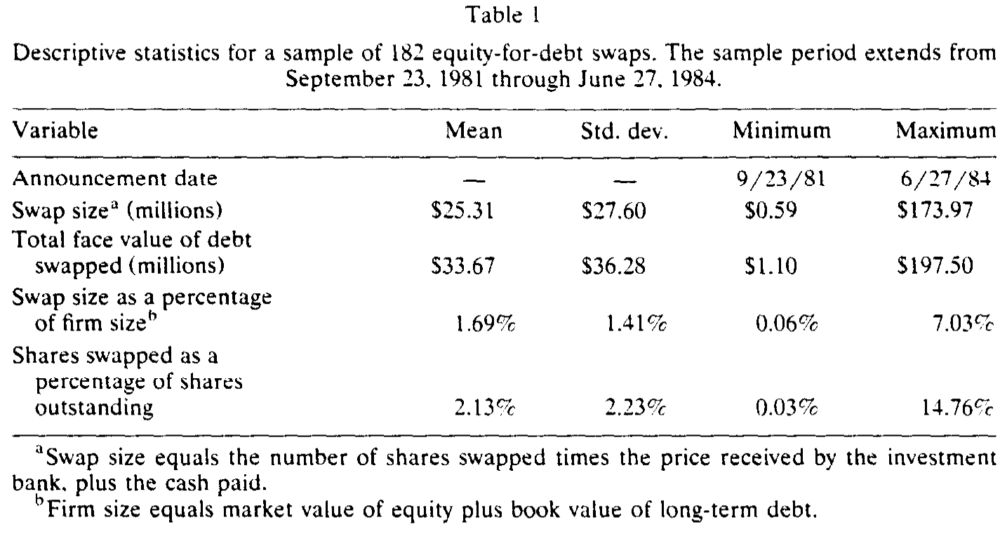
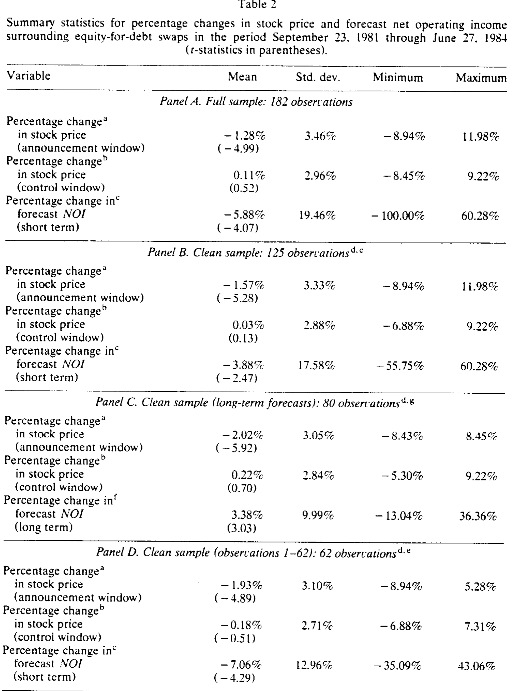
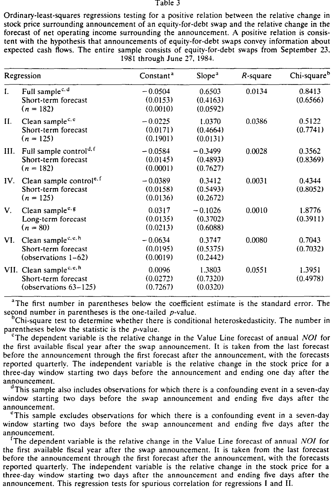
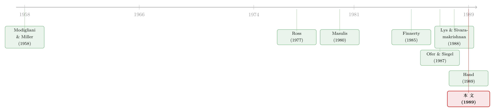

换股还债，股价为什么跌？答案藏在分析师调低的预测里
本文读的是 Israel, Ofer & Siegel (1989, Journal of Financial Economics)：当一家公司宣布「发新股、还旧债」的换股交易后，分析师会向下修正对公司净营业收入的预测，而且修正幅度越大、股价跌得越狠——两者正相关。这条相关性，正是「股价下跌反映了关于现金流的坏消息」这一假说的直接证据。
1 一个老问题，和它一直缺的那块拼图
先讲一个让财务学者困惑了很多年的现象。
公司宣布降低杠杆的交易——比如发新股把债还掉——市场往往报以显著的负向股价反应。这件事本身并不新鲜，Masulis (1980, 1983)、Mikkelson (1981) 早就把它记录得清清楚楚。可奇怪就奇怪在这里：按教科书的逻辑，降杠杆应该是好消息才对——风险小了、破产概率低了、财务更稳健了，凭什么股价要跌？
于是人们提出了各种解释。其中一个特别有意思，叫现金流信息假说 (cash-flow information hypothesis)。它的逻辑是这样的：经理人手里握着外人不知道的私人信息。当他预见到公司未来的现金流要变差时，他会更倾向于减少负债（因为高杠杆配上糟糕的现金流，是会出事的）。所以,「降杠杆」这个动作本身，就泄露了一个坏消息——公司未来的现金流没那么好了。这正是 Ross (1977) 资本结构信号理论的一个自然延伸。
这个故事讲得很漂亮。但它有一个致命的软肋：怎么证明？
股价跌了，可能是因为现金流坏消息，也可能是因为别的——风险上升了、税盾丢了、或者纯粹是发新股带来的稀释。你看到的只是一个跌了的股价，却没法把那一团混在一起的原因拆开。于是，一个自然的问题是：有没有一把尺子，能直接量出市场对「现金流」的预期到底变没变？
这篇 1989 年的论文，给出的答案是：有，去看分析师的预测。
2 为什么是「净营业收入」，而不是「每股收益」
这是全文最关键、也最容易被忽略的一步。
如果你想知道市场对现金流的预期变了没有，最顺手的代理变量似乎是分析师对每股收益 (earnings per share, EPS) 的预测。Ofer & Siegel (1987) 就是这么做的——他们记录了股利公告前的 EPS 预测误差，发现它和公告引起的股价变动正相关（关于这条思路本身可参见《价格会"教"分析师做预测吗？》）。
但用 EPS 来研究换股交易，根本行不通。为什么？因为换股这个动作的纯机械效应 (pure mechanics)，本身就会改变 EPS。
想想看：发新股，股数 N 增加了，每股摊薄；同时还掉债，利息支出 I 减少了，税后利润上升；可税盾也可能因此丢掉一部分。哪怕这笔交易完全没传递任何信息，光是这些会计机械效应，就足以让 EPS 动起来。在一个 Modigliani-Miller (1958) 的世界里，换股不改变股价，却会降低权益成本、改变预期 EPS。这样一来，你看到 EPS 预测被下调，根本分不清是「坏消息」还是「纯机械」——两者会形成一种伪相关 (spurious correlation)。
Lys & Sivaramakrishnan (1988) 想了个补丁：用「调整后的 EPS」。可这个调整后的指标同样被机械效应污染——换股减少了税后利息，反而抬高了调整后 EPS，把坏消息的下调给抵消掉了。结果他们用时间序列模型算的预测误差和股价有显著正相关，但用分析师预测的调整后盈余却找不到显著关系。一团乱麻。
真正关键的一步在于：换一个不受机械效应污染的指标。
作者选了净营业收入 (net operating income, NOI)。NOI 度量的是扣息扣税之前的现金流，它不受股数变化、不受利息变化、不受税盾变化的影响。换句话说，换股的纯机械效应完全碰不到 NOI。那么，分析师对 NOI 预测的任何修正，就只能反映一件事——他们对公司经营性现金流的预期真的变了。
这把尺子，干净。
3 模型：把「股价怎么跌」写成一个可以检验的方程
要把直觉变成可检验的命题，作者搭了一个简洁的模型。我们一步步走。
第一步，定义 NOI 和 EPS 的关系。 设 \(NOI^e\) 是市场对全公司净营业收入的预期，\(EPS^e\) 是市场对每股收益的预期，二者通过一个公司特定的乘子 \(\delta\) 联系起来：
$$EPS^e = \delta\, NOI^e$$
这是一个恒等式。\(\delta\) 里打包了股数、利息支出、税率、税盾等全部信息——它代表那部分最终落到股东手里的、每股的净营业收入。
第二步，给股价定价。 假设股价是 EPS 预期的资本化：
$$P = \frac{EPS^e}{d} = \frac{\delta\, NOI^e}{d}$$
其中 \(d\) 是公司特定的资本化因子，等于「权益要求回报率」减去「EPS 预期增长率」。眼熟吗？这就是一个不变增长永续模型（Gordon 模型）的样子，\(d = r - g\)。
第三步，对永久性变化求全微分。 假设换股泄露的信息关乎 NOI 的一个永久性变化。对 (2) 式取全微分、再除以 \(P\) 并代回 (2)，整理后得到一个干净得出奇的式子：
$$\frac{\Delta P}{P} = \frac{\Delta NOI^e}{NOI^e} + \frac{\Delta \delta}{\delta} - \frac{\Delta d}{d}$$
这个方程是全文的引擎。它把股价变动拆成了三块：第一项是纯信息效应——市场对 NOI 的预期变动百分之几，每股价格就跟着变百分之几；后两项则混进了机械效应（\(\Delta\delta/\delta\)：股数、利息、税盾）和风险/增长的变化（\(\Delta d/d\)）。
这里有个漂亮的内部检验。假设我们身处纯 MM 世界、且换股不释放任何信息（即 \(\Delta NOI^e = 0\)）。MM 命题一告诉我们股价不该变，于是后两项必须互相抵消——机械效应引起的 \(\Delta\delta\) 和 \(\Delta d\) 恰好对冲。这说明模型自洽。
第四步，处理暂时性变化。 如果换股泄露的信息只关乎下一期的 NOI（暂时性变化），全微分给出一个几乎一样的方程，唯一的差别是 \(\Delta NOI^e/NOI^e\) 前面的系数：
$$\frac{\Delta P}{P} = d\cdot\frac{\Delta NOI^e}{NOI^e} + \frac{\Delta \delta}{\delta} - \frac{\Delta d}{d}$$
为什么前面多了个 \(d\)？因为一块钱的暂时性收入，只值一块钱永久性收入的 \(d\) 倍（\(d\) 是个很小的数，比如 0.1）。这个系数上的差异，后面会成为区分「永久 vs 暂时」的钥匙。
第五步，从理论方程到估计方程。 真实世界里 \(\Delta P/P\) 和 \(\Delta NOI^e/NOI^e\) 都观察不到，只能用代理变量。作者用三日窗口（公告前 2 天收盘到公告后 1 天收盘）的股价变动做前者的代理，用 Value Line 在 \(t_b\)、\(t_a\) 两个时点的 NOI 预测之差做后者的代理：
$$\mathrm{PR}\!\left[\frac{\Delta P}{P}\right] = \frac{\Delta P}{P} + \eta_p, \qquad \mathrm{PR}\!\left[\frac{\Delta NOI^e}{NOI^e}\right] = \frac{\Delta NOI^e}{NOI^e} + \eta_n$$
这里 \(\eta_p\)、\(\eta_n\) 是与换股无关的其他消息带来的噪声。注意一个巧妙的安排：NOI 预测的修正跨越了至少三个月，而股价变动只在三天内——所以 NOI 代理的测量误差更大。作者于是把误差大的变量放到方程左边（左边变量的误差不会使 OLS 估计有偏），得到核心的估计方程：
整个假说检验，就压缩成一句话：看 \(\beta\) 是不是显著大于零。
- 若换股不传递关于 NOI 水平的信息，\(\beta = 0\)；
- 若换股传递了关于 NOI 水平的信息，\(\beta > 0\)。
4 但「相关」会不会是假的？——一个聪明的控制实验
到这里你可能会皱眉：等一下。我用三天的股价、配三个月的预测修正，这中间隔了那么久，万一这三个月里发生了别的消息，同时影响了 NOI 预测和股价，那不就制造出一个虚假的正相关了吗？\(\beta\) 大于零，也许根本不是换股的功劳。
这个担心非常对。作者的处理方式，是本文方法论上最漂亮的一笔——一个控制回归 (control regression)。
逻辑是这样：在 \(\beta=0\)（无信息）的前提下，只要 \(\eta_p\) 和 \(\eta_n\) 两个噪声相互独立，估出来的 \(\beta\) 就该是零。所以问题归结为：这两个噪声到底相不相关？为此，作者另选一个控制窗口——公告后第 2 天到第 5 天 \([t(+2), t(+5)]\)——在这个窗口里没有换股公告，只有日常的市场噪声。然后在这个窗口里跑同样的回归：
$$\mathrm{PR}_c\!\left[\frac{\Delta NOI^e}{NOI^e}\right] = \alpha_c + \beta_c\,\mathrm{PR}_c\!\left[\frac{\Delta P}{P}\right] + \varepsilon_c$$
如果 \(\beta_c\) 显著为正，说明「日常噪声」本身就能制造正相关，那主回归的结果就不可信；如果 \(\beta_c\) 不显著，说明虚假相关不是问题，主回归里的 \(\beta>0\) 才真的能归功于换股公告。
这是一个干净利落的安慰剂检验思路——在没有事件的窗口里，看看相关性会不会「凭空」冒出来。
还有一个常被忽略的细节：作者特别提醒，由于误差项与右边变量负相关（经典的变量误差问题，外加 \(\Delta d/d - \Delta\delta/\delta\) 与 \(\Delta P/P\) 的负相关），OLS 估计的 \(\beta\) 会向零偏。所以这是一个保守的检验——它可能把真实存在的信息效应低估，却不会无中生有。能在这种向下偏误下还测出显著的正系数，反而更有说服力。
5 数据：把一份「脏」样本洗干净
数据来自 John Hand 提供的换股清单：247 笔换股交易，时间跨度 1981 年 9 月 23 日到 1984 年 6 月 27 日。

Table 1
清洗的过程值得一说，因为它直接关系到识别的可信度：
- 换股公告日定义为普通股在 SEC 注册登记之日（沿用 Hand 1989 的定义），这些登记通常伴随道琼斯通讯社的新闻稿；
- 剔除 1 笔无法和 CRSP 匹配的；
- NOI 预测来自 Value Line，定义为
预测营业利润率 × 预测销售额；要求 \(t_b\)（公告前最后一次预测）和 \(t_a\)（公告后第一次预测）针对同一财年、且该财年在公告后结束。这一步又剔除了 64 笔，剩下 182 笔； - 最关键的一步：用《华尔街日报索引》逐一排查，剔除在公告窗口前后出现混淆事件 (confounding events) 的交易——并且逐条阅读每笔换股的报道，确认没有其他重要消息同时发布。这一刀下去，留下一个干净样本 125 笔；
- 再剔除 1 个明显的离群值（用 Belsley, Kuh & Welsch 1980 的回归诊断识别）。
这种「宁可砍掉一半样本，也要换一份干净」的态度，在 1989 年的事件研究里，是相当扎实的。
6 主要结果：股价跌了，是因为现金流的坏消息
先看描述统计。无论是全样本还是干净样本，公告窗口内都有显著的股价下跌，而控制窗口内几乎没有变化——这和前人记录的降杠杆负反应一致。同时，NOI 预测也出现了显著的下调。

Table 2
但这里有个坑，作者很诚实地指出了：NOI 预测下调，本身并不能证明什么。因为分析师的盈余预测存在一个众所周知的长期向下修正倾向——Fried & Givoly (1982) 和 Elton, Gruber & Gultekin (1984) 都记录过这种「分析师总是先乐观、后慢慢调低」的系统性偏差（这正是为什么单看「分析师调低了」会误导人，可参见《同一份数据，两个结论：当『分析师本来就会调低预测』这件事被忽略了》）。
所以光看「跌」是不够的，真正的检验是看「跌幅」之间的相关——股价跌得越狠的那些公司，是不是 NOI 预测也下调得越多？这才是 \(\beta>0\) 要回答的问题。

Table 3
答案是肯定的：\(\beta\) 显著为正。换股公告确实传递了关于 NOI 水平的负面信息，而且这个信息正是股价下跌的一部分来源。控制回归则没有给出显著的虚假相关，证据站得住。
于是反转出现了——而且是两个：
第一个反转：信息是「暂时的」，不是「永久的」。 利用模型里永久 vs 暂时两种情形系数上的差别（\(1\) 对 \(d\)），作者用短期和长期 NOI 预测做对比，发现换股传递的信息更像是关于暂时性现金流变化，而非永久性下滑。也就是说，市场认为这家公司只是「最近这阵子不太行」，而非「从此走下坡路」。
第二个反转：分析师是「学」会的。 显著的相关关系，只出现在样本的后半段。这意味着在换股刚作为一种金融创新出现时，分析师没认出它的信息含量；是在反复观察了多次换股之后，他们才学会把这个动作解读成现金流信号。这是一个很优雅的发现——它把「市场有效性」从一个静态命题，变成了一个动态的、有学习曲线的过程。
7 文献脉络
把这条线捋一捋，会看到一个清晰的演进。
最上游是 Modigliani & Miller (1958)——他们定义了那个「资本结构无关」的基准世界，后来所有关于「为什么资本结构会传递信息」的讨论，都是在打破这个基准。Ross (1977) 给出了关键的一跃：资本结构是经理人私人信息的信号。
接着，一批实证研究记录了「降杠杆 → 股价跌」这个核心现象——Masulis (1980, 1983)、Mikkelson (1981)，以及专门针对换股的 Finnerty (1985)、Rogers & Owers (1985)。现象有了，可机制始终是个黑箱：股价为什么跌，没人能直接拆开。

真正与本文血缘最近的，是两篇。一篇是 Ofer & Siegel (1987)——同样用分析师预测去捕捉公告的信息含量，只不过场景是股利公告、用的是 EPS 预测误差。本文等于把这套方法搬到换股上，并修正了它在换股语境下的致命缺陷（EPS 被机械效应污染）。另一篇是 Lys & Sivaramakrishnan (1988)——它和本文几乎在问同一个问题，但因为用了被污染的「调整后 EPS」，得到的结果含糊不清。本文用 NOI 这把干净的尺子，给出了 Lys & Sivaramakrishnan 没能给出的清晰答案。
同期还有 Hand (1989)，他从另一个角度论证公司用换股来「平滑盈余」。本文与之互补：Hand 关心动机，本文关心信息含量。
本文的位置，就在这条「现象 → 机制」的链条上，补上了那块缺失的拼图：用市场预期的直接代理，证明了股价下跌确实包含现金流坏消息。关于「纯资本结构变化到底传递了什么」这一更一般的追问，后来的文献仍在继续（可参见《镜子碎了：当「加杠杆」和「去杠杆」说的根本不是同一件事》）；而「发证券公告未必都是坏消息」的另一面，也有人专门做过（见《新股增发，凭什么不一定是坏消息？》）。
8 评论与延伸（Q&A + 研究方向）
(a) 几个可能的疑问
Q：为什么不直接用每股收益（EPS）？那不是更现成吗？
因为换股的纯机械效应会直接改变 EPS——股数增加、税后利息减少、税盾可能丢失——哪怕没有任何信息，EPS 也会动。这会让「EPS 预测下调」与「股价下跌」产生伪相关，分不清是坏消息还是会计机械。NOI 度量扣息扣税前的现金流，不受这些机械效应影响，所以它的修正只反映对经营现金流预期的真实变化。
Q：分析师本来就有「先乐观、后调低」的系统性偏差，那观察到 NOI 预测下调，凭什么归功于换股？
这正是作者强调的。所以真正的检验不是「预测下调」这个水平事实，而是截面相关——股价跌得越多的公司，预测下调得越多（\(\beta>0\)）。系统性的长期下修对所有公司大致一致，无法解释这种与股价反应挂钩的截面差异。
Q：股价（三天）和预测修正（三个月以上）窗口差这么大，会不会测出来的只是其他消息制造的虚假相关？
这是最大的威胁，作者用控制回归直接对付它：在公告后第 2–5 天这个没有换股事件的窗口里跑同样的回归，看相关性会不会凭空出现。结果不显著，说明虚假相关不是主要问题，主回归的正系数可以归功于换股。
Q：模型怎么区分「永久性」和「暂时性」的现金流变化？
靠系数。永久性变化下，\(\Delta NOI^e/NOI^e\) 在股价方程里的系数是 1；暂时性变化下系数是 \(d\)（很小）。因为一块钱暂时收入只值一块钱永久收入的 \(d\) 倍。用短期和长期预测分别检验，结果指向暂时性变化。
Q：「只在样本后半段显著」会不会只是样本量或噪声问题，而非真的「学习」？
这是一个合理的保留。作者把它解读为分析师对换股这一金融创新的学习曲线——一开始没认出信息含量，看多了才学会。但严格说，这只是与「学习假说」相容的证据，并非排他性证明；样本前期的高噪声、换股性质随时间的变化，都是替代解释。这是本文相对薄弱的一环。
Q：OLS 的 \(\beta\) 会不会有偏，导致结论不可靠？
误差结构会让 \(\beta\) 向零偏（变量误差 + \(\Delta d/d - \Delta\delta/\delta\) 与 \(\Delta P/P\) 负相关）。但这是保守方向的偏误——它只会让真实的信息效应被低估。能在向下偏误中仍测出显著正系数，反而增强了结论的可信度。作者也引用了 Israel, Ofer & Siegel (1990) 说明在 \(\beta=0\) 的零假设下标准检验仍然有效。
(b) 几个可能的研究问题与提案
1. 把这套「干净代理」思路搬到公司债市场。
【经济故事】换股降杠杆对股东是坏消息（现金流变差），但对债权人很可能是好消息（违约风险下降、优先级改善）。本文只看了股价反应，没看债券。同一笔换股，股债反应的「符号差」恰好能分离「现金流恶化」与「风险转移」两种机制。
【可行性】中。需要 TRACE 公司债成交数据（2002 年后才有，故只能用现代换股/再融资样本）配合分析师 NOI/EBITDA 预测（I/B/E/S）。识别上可借鉴本文的控制窗口设计。挑战在于现代换股/债务重组样本量和事件日的精确界定。
2. 用今天的高频分析师数据重做「学习假说」。
【经济故事】本文最有意思也最脆弱的发现是「分析师是学会的」。如今 I/B/E/S 有逐日更新的预测、覆盖几十年的多轮去杠杆浪潮，可以检验：面对一种新型融资交易（如近年的债务交换要约、ESG 挂钩再融资），分析师识别其信息含量的速度有多快、是否随分析师经验/覆盖密度而变。
【可行性】高。数据现成（I/B/E/S + Capital IQ 交易明细）。识别策略：以「某类交易首次出现的年份」为起点，追踪 \(\beta\) 随累计事件数的演化。doable。
3. 外资持有人会不会「学得更慢」？
【经济故事】如果信息含量是「学」出来的，那么对本地制度更陌生的外资投资者/分析师，识别速度应当更慢。换股、债务重组这类与本地会计、税法深度绑定的交易，正好是检验「信息劣势 vs 学习」的好场景。
【可行性】中。需要按投资者国籍拆分的持仓/交易数据（如某些市场的「外资板」或 FactSet 机构持仓），并区分本地与海外分析师的预测修正速度。识别难点在于外资身份与公司特征的内生关联。
4. 流动性是不是「学习」的隐藏变量？
【经济故事】分析师「认出」信息，和价格「反映」信息是两回事。后半段样本的显著相关，也许不是分析师学会了，而是这些股票的流动性/价格发现效率随时间提升了。把买卖价差、价格延迟作为调节变量，能把「认知学习」从「市场微观结构改善」里剥出来。
【可行性】高。CRSP 日内/日度数据可构造流动性代理，交互项检验直接。是对本文学习假说一个干净的稳健性延伸。
9 我的判断
贡献。 这篇文章的价值不在于「发现了 \(\beta>0\)」，而在于它找到了一把干净的尺子。在一片被机械效应、税盾、稀释搅成一团的混沌里，作者意识到：只要换一个扣息扣税前的指标（NOI），就能把「纯信息」从「纯机械」里干净地分离出来。这种「问题的关键不在更复杂的计量，而在选对一个不被污染的变量」的洞察，是好的实证研究最稀缺的品质。配上那个安慰剂式的控制回归，整套识别在 1989 年的标准下相当扎实。
对识别的担忧。 我最不放心的是两点。其一，「只在后半段显著」被解读为「学习」，但这个结论的替代解释太多——样本前期噪声、换股性质的时变、流动性的改善——作者并没有真正排除它们，更像是一个事后叙事而非先验检验。其二，三天股价对三个月预测的窗口错配，虽然有控制回归兜底，但控制窗口（公告后 2–5 天）本身就紧贴事件，可能仍残留换股的余波，未必是纯净的「无事件」基准。
后续想看到什么。 我最想看的，是把股、债两个市场放在同一笔换股上对质——同一个动作，股东听到的是坏消息，债权人听到的可能是好消息，两者的符号差能直接区分「现金流恶化」与「风险转移」。这是本文那把「干净尺子」最自然、也最有现代数据可做的延伸。
参考文献
- Asquith, P. & Mullins, D. W. (1986). Equity issues and stock price dilution. Journal of Financial Economics 15, 61–89.
- Elton, E. J., Gruber, M. J. & Gultekin, M. N. (1984). Professional expectations: Accuracy and diagnosis of errors. Journal of Financial and Quantitative Analysis 19, 351–364.
- Finnerty, J. D. (1985). Stock-for-debt swaps and shareholder returns. Financial Management 14, 5–17.
- Fried, D. & Givoly, D. (1982). Financial analysts' forecasts of earnings: A better surrogate for earnings expectations. Journal of Accounting and Economics 4, 85–107.
- Hand, J. (1989). Did firms undertake debt-equity swaps for an accounting paper profit or true financial gain? Accounting Review 64, 587–623.
- Israel, R., Ofer, A. R. & Siegel, D. R. (1989). The information content of equity-for-debt swaps: An investigation of analyst forecasts of firm cash flows. Journal of Financial Economics 25, 349–370.
- Israel, R., Ofer, A. R. & Siegel, D. R. (1990). The use of changes in equity value as a measure of the information content of announcements of changes in financial policy. Journal of Business and Economic Statistics 8, forthcoming.
- Lys, T. & Sivaramakrishnan, K. (1988). Earnings expectations and capital restructurings: The case of equity-for-debt swaps. Journal of Accounting Research 29, 273–299.
- Masulis, R. W. (1980). The effect of capital structure change on security prices: A study of exchange offers. Journal of Financial Economics 8, 139–177.
- Masulis, R. W. (1983). The impact of capital structure change on firm value: Some estimates. Journal of Finance 35, 305–319.
- Mikkelson, W. H. (1981). Convertible calls and security returns. Journal of Financial Economics 9, 237–264.
- Modigliani, F. & Miller, M. H. (1958). The cost of capital, corporation finance, and the theory of investment. American Economic Review 48, 261–297.
- Ofer, A. R. & Siegel, D. R. (1987). Corporate financial policy, information, and market expectations. Journal of Finance 42, 889–911.
- Rogers, R. C. & Owers, J. E. (1985). Equity for debt exchanges and stockholder wealth. Financial Management 14, 18–26.
- Ross, S. A. (1977). The determination of financial structure: The incentive-signalling approach. Bell Journal of Economics and Management Science 8, 23–40.